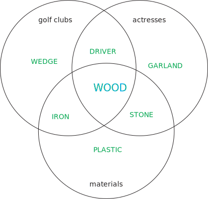
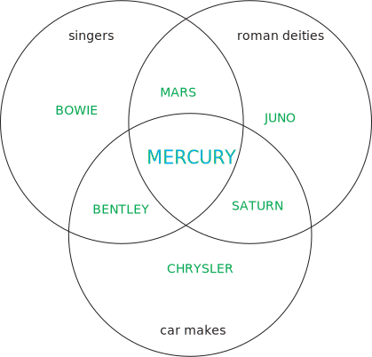
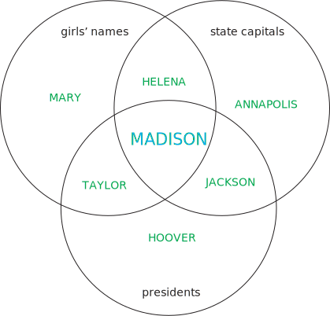
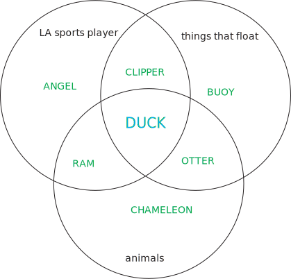
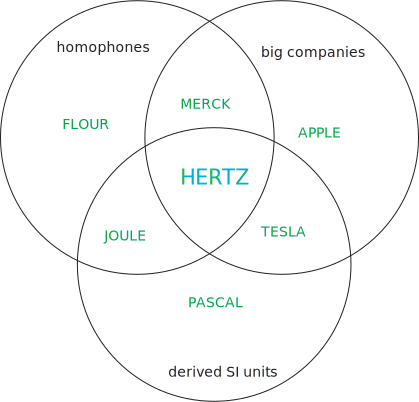
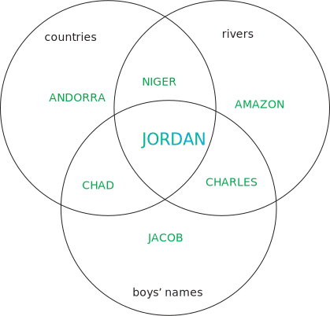

The trivia questions in each "round" solve to six answers that can be grouped in the Venn diagrams into three distinct categories. To "solve" the Venn diagram, solvers must place the six answers into their corresponding positions in the Venn diagram, and then type in the answer that fits all three categories. In order:






Indexing into each final word by the price tag in dollars yields the answer WEDDED.